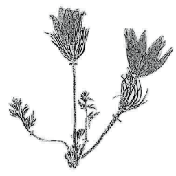

Personenregister
Im Personenregister finden Sie einzelne Lebensläufe, Beziehungen, Wirkungsorte, botanische Arbeiten und Quellenhinweise.
Diese Website dokumentiert Personen, Orte, Sammlungen und Werke welche im BMFTR-Verbundprojekt Naturforschung & protestantische Mission erfasst wurden. Sie macht sichtbar, welche Menschen beteiligt waren, wo sie wirkten und welche Beziehungen zwischen Orten, Texten und Sammlungen bestehen.
Viele Angaben sind mit Quellen versehen und führen bei Bedarf zu weiteren Referenzen.
Im Personenregister finden Sie einzelne Lebensläufe, Beziehungen, Wirkungsorte, botanische Arbeiten und Quellenhinweise.
Die Ortsansicht zeigt Orte mit zugeordneten Personen und Ereignissen. So lässt sich nachvollziehen, wo Geburt, Tod oder Tätigkeit einer Person verortet sind.
Rot dargestellte Informationen sind durch eine Quelle belegt, welche sich per Klick anzeigen lässt. Das kleine

-Symbol markiert interne Webeiten-Links.